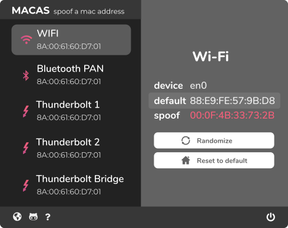

MACAS
MACAS is an electron app to easily spoof a MAC address.
What is MAC spoofing?
MAC spoofing is a technique for changing a Factory-assigned Media Accsess control (MAC) address network interface on a networked device.

What is MAC spoofing?
MAC spoofing is a technique for changing a Factory-assigned Media Accsess control (MAC) address network interface on a networked device.